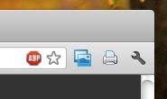

Il plugin di stampa per Google Chrome consente di ottenere stampe fedeli della mappa visualizzata in Mappu.
Per installarlo è sufficiente cliccare sul link seguente:
e rispondere affermativamente a tutti gli avvisi di sicurezza presentati da Google Chrome. Una volta installato il plugin presenta una icona di stampante come mostrato nell'immagine a fianco.
Per stampare è sufficiente, mentre si sta utilizzando Mappu, cliccare sul pulsante del plugin ed attendere qualche istante mentre viene generata la pagina.